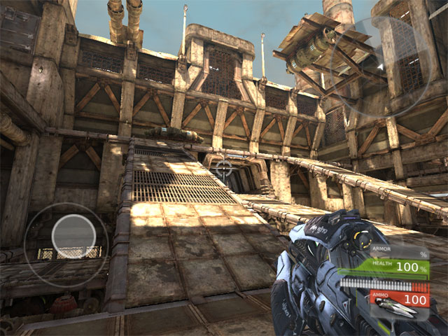
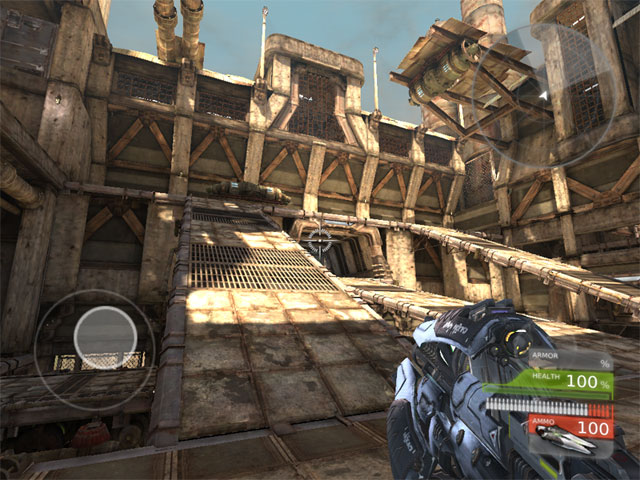

UDN
Search public documentation:
MigratingMobileJune2011
日本語訳
中国翻译
한국어
Interested in the Unreal Engine?
Visit the Unreal Technology site.
Looking for jobs and company info?
Check out the Epic games site.
Questions about support via UDN?
Contact the UDN Staff
中国翻译
한국어
Interested in the Unreal Engine?
Visit the Unreal Technology site.
Looking for jobs and company info?
Check out the Epic games site.
Questions about support via UDN?
Contact the UDN Staff
UE3 Home > Mobile Home > Migrating Mobile Projects to June 2011 UDK Beta
Migrating Mobile Projects to June 2011 UDK Beta
Overview
Merged Workflow
- Relocate custom content packages from
MobileGame\Contentdirectory into theUDKGame\Contentdirectory. - Relocated maps from
MobileGame\Content\MapstoUDKGame\Content\Mapsand change the extension to.udkfrom.mobile. - Merge changes in
MobileGame\Config.ini files intoUDKGame\Config\Mobile.ini files. Specifically:-
MobileGame\Config\DefaultEngine.ini->UDKGame\Config\Mobile\MobileEngine.ini -
MobileGame\Config\DefaultGame.ini->UDKGame\Config\Mobile\MobileGame.ini -
MobileGame\Config\DefaultInput.ini->UDKGame\Config\Mobile\MobileInput.ini
-
.udk for consistency. New maps or maps saved using save as, will always be saved with .udk unless explicitly set.
Renamed Gameplay Classes
MobileGame, MobilePC, and MobilePawn classes have been renamed to SimpleGame, SimplePC, and SimplePawn, respectively. If your gametype, PlayerController, or Pawn classes for your project extend directly from any of these classes or make reference to them, those references need to be updated to point to the new class names. Otherwise, you will get errors when compiling your project. The renamed classes retain all of the functionality of their predecessors so everything should continue to work as expected once the references are updated.
These classes are very basic and you should not expect a gun in first person mode to show up when using them without any modifications. When upgrading, if you are making use of a custom gametype, you will need to set your maps to use the game type they want via new Default Game Type property (described below), via the .ini file setting, or via custom script code
Specifying Gametypes
SimpleGame is the default game type if no gametype is specified. SimpleGame has added the functionality to choose the gametype based on map prefixes so compatable UT-style maps that have the DM, VCTF, etc prefixes will still load the UT game types as expected and any custom map prefixes you specify in the .ini file and use for your maps will work "out of the box".
Previewing In Editor
 In addition, the Play In Editor features will use mobile input, controls, and rendering.

In addition, the Play In Editor features will use mobile input, controls, and rendering.
